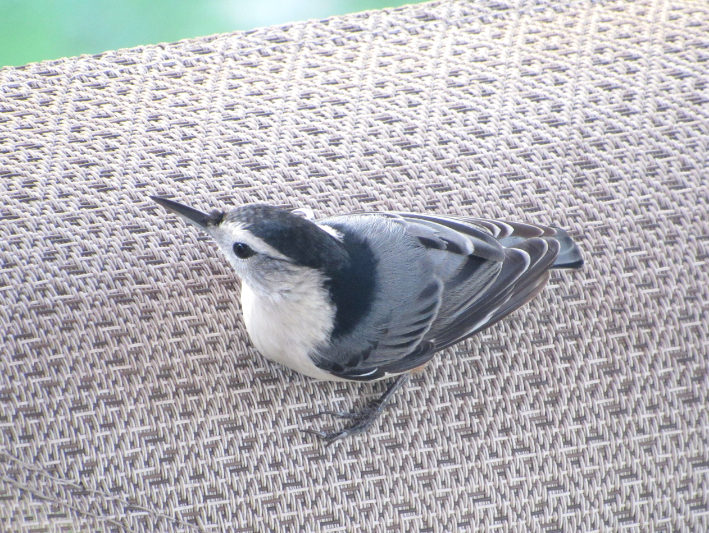

White-Breasted Nuthatch


- Description
- A common feeder bird with clean black, gray, and white markings, White-breasted Nuthatches are active, agile little birds with an appetite for insects and large, meaty seeds. They get their common name from their habit of jamming large nuts and acorns into tree bark, then whacking them with their sharp bill to “hatch” out the seed from the inside. White-breasted Nuthatches may be small but their voices are loud, and often their insistent nasal yammering will lead you right to them.
- Behavior
- White-breasted Nuthatches forage up, down, and sideways over tree trunks and around large branches. They often (though not always) start high in trees and move down them head first, pausing to crane their necks up and back, toward the horizontal, for a look around. They probe into bark crevices or chip away at wood to find food. When they find large nuts and seeds, they jam them into the bark and hammer them open. White-breasted Nuthatches often store seeds and insects one at a time, and somewhat haphazardly, under loose bark on their territory. White-breasted Nuthatches live in pairs year round and chase other nuthatches from their territory
- Habitat
- White-breasted Nuthatches are birds of mature woods, and they’re more often found in deciduous than coniferous forests (where Red-breasted Nuthatches are more likely). You can also find them at woodland edges and in open areas with large trees, such as parks, wooded suburbs, and yards.
- Diet
- White-breasted Nuthatches eat mainly insects, including weevil larvae, wood-boring beetle larvae, other beetles, tree hoppers, scale insects, ants, gall fly larvae, caterpillars (including gypsy moths and tent caterpillars), stinkbugs, and click beetles, as well as spiders. They also eat seeds and nuts, including acorns, hawthorn, sunflower seeds, and sometimes crops such as corn. At birdfeeders they eat sunflower seeds, peanuts, suet, and peanut butter.
White Breasted Nuthatch Call
Cool Facts
- The White-breasted Nuthatch is normally territorial throughout the year, with pairs staying together. The male has to spend more time looking out for predators when he’s alone than while he’s with his mate. That’s the pattern for most birds, and one reason why birds spend so much time in flocks. But the female nuthatch has to put up with the male pushing her aside from foraging sites, so she spends more time looking around (for him) when he’s around than when she is alone.
- In winter, White-breasted Nuthatches join foraging flocks led by chickadees or titmice, perhaps partly because it makes food easier to find and partly because more birds can keep an eye out for predators. One study found that when titmice were removed from a flock, nuthatches were more wary and less willing to visit exposed bird feeders.
- The oldest known White-breasted Nuthatch was at least 9 years, 9 months old when it was found in Colorado.